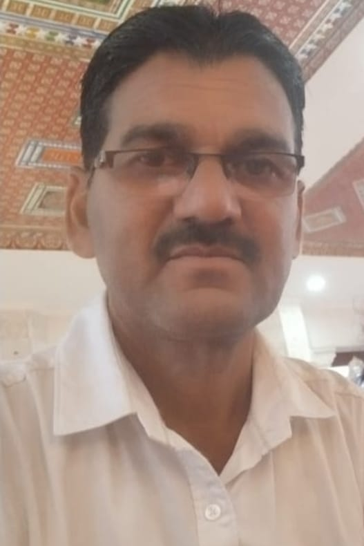

आमचे गाव - एक आदर्श गाव
आमचे गाव निसर्गाच्या कुशीत वसलेले एक सुंदर आणि समृद्ध गाव आहे. येथे हिरवीगार शेती, स्वच्छ रस्ते आणि शांत वातावरण मनाला प्रसन्न करते. गावातील लोक अत्यंत कष्टाळू आणि एकमेकांना मदत करणारे आहेत. शिक्षण, आरोग्य आणि स्वच्छता यांमध्ये आमचे गाव नेहमीच अग्रेसर असते. आधुनिक तंत्रज्ञान आणि पारंपारिक संस्कृती यांचा सुंदर मिलाफ येथे पाहायला मिळतो.
ध्येय आणि उद्दिष्टे
आमचे ध्येय
गावाचा सर्वांगीण विकास करणे आणि डिजिटल सेवा घराघरात पोहोचवणे.
आमचे उद्दिष्ट
स्वच्छ, सुंदर आणि सुशिक्षित गाव घडवणे.
पदाधिकारी (Office Bearers)

सरपंच
सौ. किरणताई सचिन भोकरे

उपसरपंच
श्री. पंडितराव शालिग्राम चव्हाण
ग्रामपंचायत अधिकारी
श्री. प्रशांत श्रीराम हरणे
ग्रामपंचायत सदस्य (Members)
सदस्य
सौ. प्रांजलीताई सतिश लुंगे
सदस्य
श्री. विशालभाऊ पुंडलिक चौधरी
सदस्य
सौ. बेबीताई किसन भोयर
सदस्य
सौ. उषाताई गोपाल कुरवाडे
सदस्य
सौ. सुनीताताई अमोल कोठाळे
कर्मचारी (Employees)
शिपाई
श्री. के. बी.भोयर
पाणी पुरवठा कर्मचारी
श्री. एम.बी. वानखडे
गावातील सुविधा
जिल्हा परिषद शाळा
आरोग्य केंद्र
शुद्ध पेयजल योजना
सौर ऊर्जा प्रकल्प
गावातील विकास कामे (Development Works)
- गावातील मुख्य रस्त्यांचे १००% सिमेंट काँक्रीटीकरण पूर्ण.
- संपूर्ण गावात भूमिगत गटार योजना कार्यान्वित.
- ग्रामपंचायत कार्यालयाचे आधुनिकीकरण आणि डिजिटल सेवा केंद्र.
- स्मशानभूमी सुशोभीकरण आणि शेड बांधकाम.
- गावाच्या प्रवेशद्वारावर भव्य कमान आणि सुशोभीकरण.
- संपूर्ण गावात ऊर्जा-बचत करणारे एल.ई.डी. (LED) पथदिवे.
- जिल्हा परिषद शाळेचे नूतनीकरण आणि ई-लर्निंग सुविधा.
- प्रत्येक वाडी-वस्तीवर शुद्ध पिण्याच्या पाण्याची सोय.